Who Am I
- John Hilliard
- Software engineer since 2007
- Next Jump
- Emacs user
- @praetorian
Agenda for Today
- Language Fundamentals
- Document Object Model - DOM
- Events and Listeners
- jQuery
- Ajax
- Exercises
JavaScript: What is it good for?
- Web = HTML (content) + CSS (style) + JS (behavior)
- Makes websites come alive
- It's not Java
Technical JavaScript is a high-level, dynamic, untyped interpreted programming language that is well-suited to object-oriented and functional programming styles. Javascript derives its syntax from Java, its first-class functions from Scheme, and its prototype based inheritance from Self1.
JavaScript Values
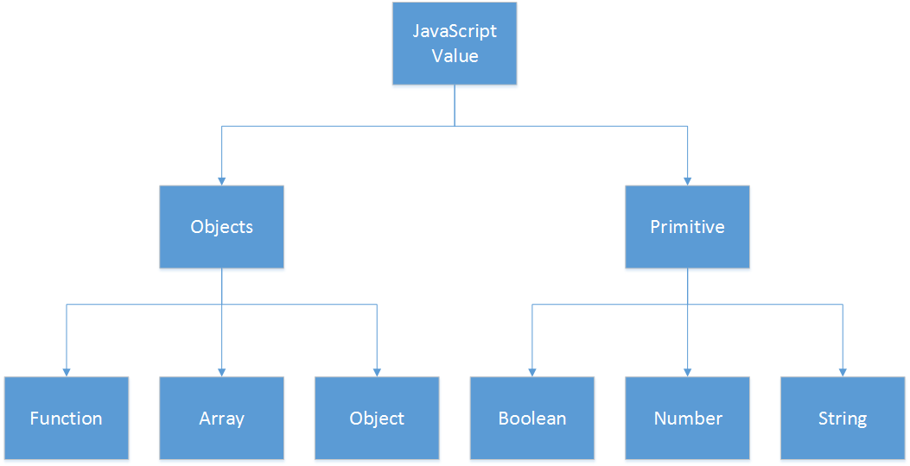Primitives
- Boolean
-
truefalse - Number
- Float-64:
10.50.1 - String
-
"abc123"'' - Special
-
undefinednullNaNInfinity
Notably, there is no data type for a single character
Variables
Variables define a symbolic name for a value and allows the value to be referred by name1.
Before you use a variable, you should declare it. Variables are declared with the var keyword
Object
An object is a collection of properties where each property has a name and a value. The value you can be a primitive or an object1.
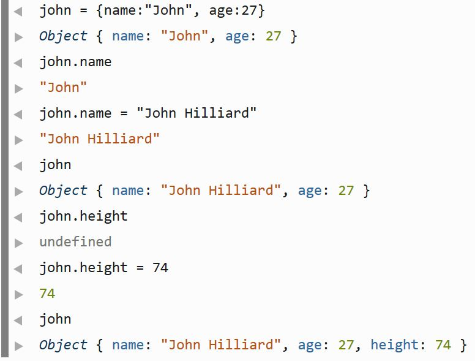Array
An array is an ordered collection of numbered values. Arrays have special behavior and syntax in comparison to ordinary objects1.
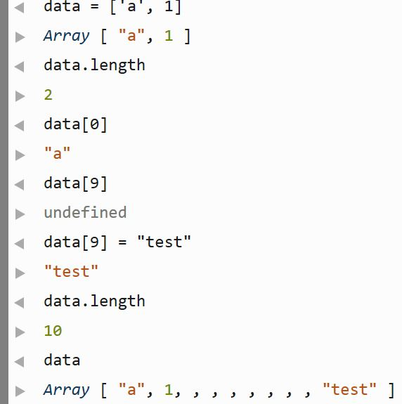Function
A function is an object that has executable code associated with it. A function may be invoked to run that executable code and return an computed value1.
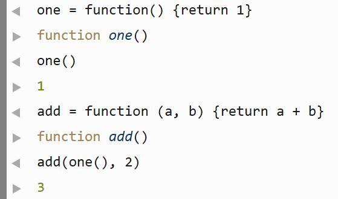Operators
- +,-,*,/
- Add, subtract, multiply, divide
- >,>=,<,<=
- Compare operands in order
- ==, !==
- Test for equality and inequality
- ===, !==
- Test for strict equality and inequality
- &&, ||
- Logical AND, OR
Operator Examples
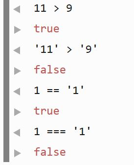Many operators are polymorpic.
Statements
The statements in JavaScript will look familiar from Java / C
-
if (something) { statement 1 }
[else { statement 1}] -
while (something) {statements} -
for (init; test; increment) {statements} -
switch (expression) {case/default statements} -
try {statements}
[catch {statements}]
[finally {statements}]
Pause
So far, we've covered the fundamentals of core JavaScript, but it's not clear how we use it to make webpages come alive.
Now we'll cover client-side JavaScript. Client-side means that the JavaScript code is running within a web browser.
DOM
"The Document Object Model (DOM) is a cross-platform and language-independent convention for representing and interacting with objects in HTML, XHTML and XML documents.[1] Objects in the DOM tree may be addressed and manipulated by using methods on the objects. The public interface of a DOM is specified in its application programming interface (API)" 1.
Simpler version: The DOM is the API used to manipulate web pages.
DOM Simple Example
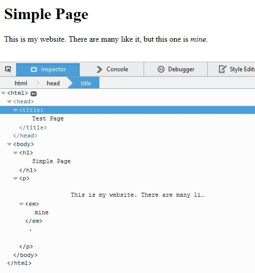Dom Representation
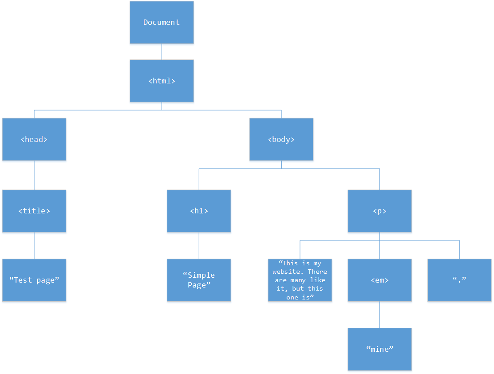Dom Manipulation
Executing the following code changes the webpage.
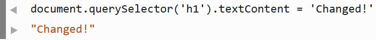
Now the h1 element has been updated.
Learn more
The Mozilla Developer Network has great documentation.
QuirksMode is a great resource for understanding compatibility for different browsers.
In the last example I used document.querySelector and also node.textContent.
jQuery smoothes over many of the details.
Events
Web browsers generate an event whenever something interesting happens. A JavaScript application can register handlers which will execute when the event occurs. Example event types:
-
click— When something is clicked -
keypress— When a key is pressed down -
load— When a resource has finished loading
There are very many different event types.
Event Example
This is how you would use the DOM API to work with events.
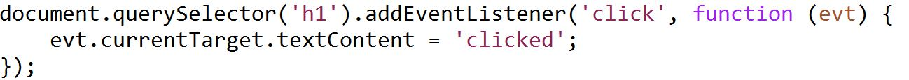Relevant API docs:
Result

Browser Inconsistencies
Each browser has subtle differences in its implementation of the DOM API. These differences can be extremely subtle and difficult to debug.
Enter jQuery
jQuery simplifies common tasks and smooths over the variations in client-side APIs.
Examples
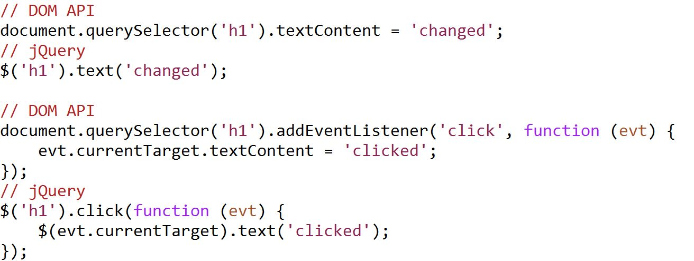jQuery has a very full featured and well documented API.
Ajax
"Ajax is a group of interrelated Web development techniques used on the client-side to create asynchronous Web applications. With Ajax, Web applications can send data to, and retrieve data from, a server asynchronously (in the background) without interfering with the display and behavior of the existing page.1"
Simpler version: Ajax is a JavaScript technique that allows data to be sent and received without reloading the page.
Ajax Example
Use Ajax to retrieve some data and update the DOM with it
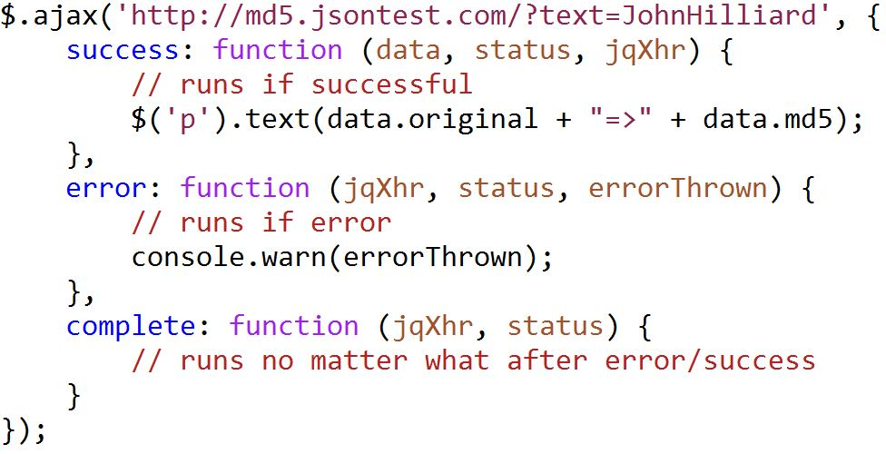JSON
JSON stands for
JavaScript Object Notation. The
methods JSON.parse()
and JSON.stringify() are used to
serialize JavaScript objects to and from
strings. JSON is commonly used to transmit data
with Ajax.
Exercises
http://praetoriansentry.github.io/si/exercise/Visit this link to get started with the exercises for today